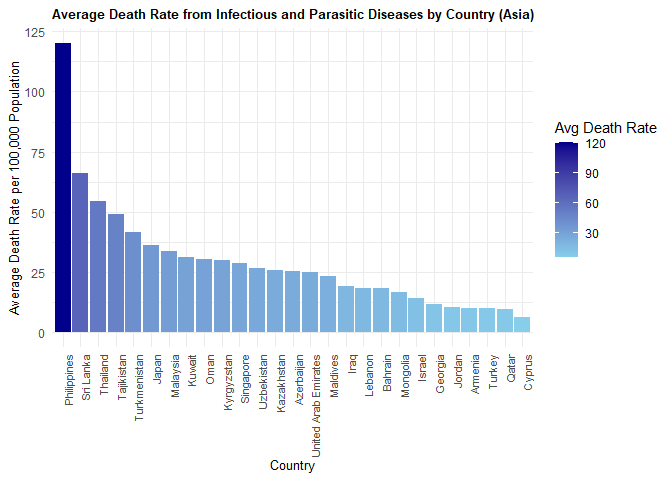

The goal of diseasesdeathrate is to provide data on age-standardized death rates from infectious and parasitic diseases across various Asian countries, as recorded by the World Health Organization (WHO). This dataset allows users to explore and analyze health trends specific to Asian regions, supporting public health research and data analysis in the context of infectious diseases.
Installation
You can install the development version of diseasesdeathrate from GitHub with:
remotes::install_github("ETC5523-2024/assignment-4-packages-and-shiny-apps-yasin27mohammad/diseasesdeathrate")Example
This is a basic example which shows you how to solve a common problem:
library(diseasesdeathrate)
library(ggplot2)
#> Warning: package 'ggplot2' was built under R version 4.3.3
library(dplyr)
#>
#> Attaching package: 'dplyr'
#> The following objects are masked from 'package:stats':
#>
#> filter, lag
#> The following objects are masked from 'package:base':
#>
#> intersect, setdiff, setequal, union
avg_death_rate <- infectious_parasitic_diseases_death_rate %>%
group_by(Entity) %>%
summarize(avg_death_rate = mean(`death rate per 100,000 population`, na.rm = TRUE))
# Plot the average death rate per country
ggplot(avg_death_rate, aes(x = reorder(Entity, -avg_death_rate), y = avg_death_rate, fill = avg_death_rate)) +
geom_col() +
scale_fill_gradient(low = "skyblue", high = "darkblue") + # Color gradient for fill
labs(title = "Average Death Rate from Infectious and Parasitic Diseases by Country (Asian Continent)",
x = "Country",
y = "Average Death Rate per 100,000 Population") +
theme_minimal() +
theme(
axis.text.x = element_text(angle = 90, hjust = 1, size = 8),
plot.title = element_text(size = 10, face = "bold"),
axis.title = element_text(size = 9.5),
legend.position = "right"
) +
guides(fill = guide_colorbar(title = "Avg Death Rate"))